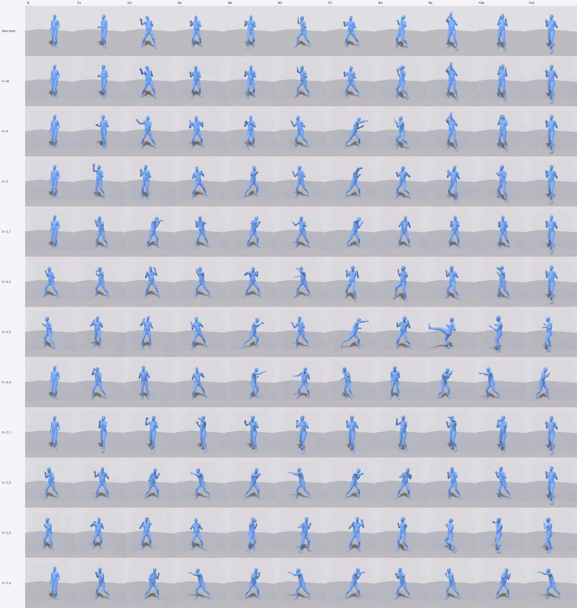
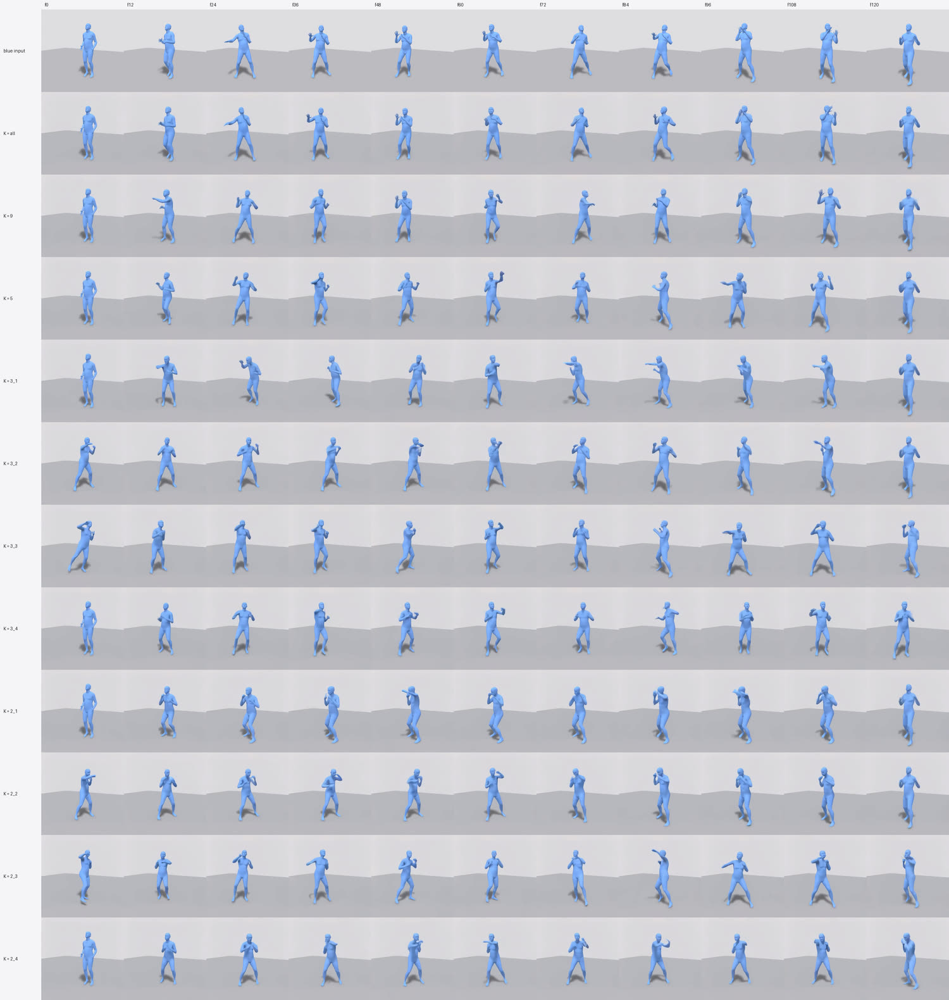

Exp 2 · Strong vs. loose control — how much motion does the video model add?
Result 4 — punch
"A person throws right and left punches." The highest-energy input of the six, and the most stable across the sweep. This is the one prompt where the video model completes an action the input only gestures at.
What went in#
MotionGPT3 produces a boxing guard with small arm movement that never reaches extension. It reads as someone shadow-boxing tentatively rather than punching. Input energy 0.148 (s1234) and 0.146 (s5678) — the highest of the six by a wide margin.
Because the input is already energetic, this prompt is also the most stable across the sweep: ratios stay between 0.67 and 1.43 everywhere, with none of the freezes or doublings the other prompts show.
Strong control#
Blue inputMotionGPT3 → SMPL, every frame
K = all16 frames — every 8th
K = 99 frames — every 16th
a person throws right and left punches
punch
partial effectthe beat hip rotation leads each arm, recovery between punches
s1234
s5678
s1234
s5678
s1234
s5678
K = all (0.90) copies. K = 9 (1.20) is the interesting cell: this is the only
prompt in the sweep where K = 9 adds anything at all.The useful window#
Blue inputMotionGPT3 → SMPL, every frame
K = 50 · 32 · 64 · 88 · 120
K = 3_264 · 88 · 120 — head free
a person throws right and left punches
punch
partial effectthe beat hip rotation leads each arm, recovery between punches
s1234
s5678
s1234
s5678
s1234
s5678
K = 5 (1.33) and K = 3_2 (1.03).Placement at K = 3#
K = 3_10 · 64 · 120 — both ends pinned
K = 3_264 · 88 · 120 — head free
K = 3_332 · 64 · 88 — both ends free
K = 3_40 · 32 · 64 — tail free
a person throws right and left punches
punch
partial effectthe beat hip rotation leads each arm, recovery between punches
s1234
s5678
s1234
s5678
s1234
s5678
s1234
s5678
3_1 0.94 · 3_2 1.03 · 3_3 1.43 · 3_4 1.40. The narrowest spread of any
prompt — an energetic input leaves less room for placement to matter.Placement at K = 2#
K = 2_10 · 120 — both ends pinned
K = 2_264 · 120 — head free
K = 2_332 · 88 — both ends free
K = 2_40 · 64 — tail free
a person throws right and left punches
punch
partial effectthe beat hip rotation leads each arm, recovery between punches
s1234
s5678
s1234
s5678
s1234
s5678
s1234
s5678
2_1 0.67 · 2_2 0.82 · 2_3 0.99 · 2_4 1.05. Note that 2_3 — which nearly
doubles or triples every other prompt — does almost nothing here.The numbers for this prompt#
| seed | set | energy | vs. input |
|---|---|---|---|
| 1234 | 3_3 | 0.2233 | 1.506 |
| 1234 | 3_4 | 0.208 | 1.403 |
| 5678 | 3_4 | 0.2035 | 1.392 |
| 5678 | 5 | 0.2016 | 1.38 |
| 5678 | 3_3 | 0.1985 | 1.358 |
| 1234 | 5 | 0.191 | 1.289 |
| 5678 | 9 | 0.1858 | 1.271 |
| 1234 | 2_4 | 0.1736 | 1.171 |
| 5678 | 3_2 | 0.1696 | 1.16 |
| 1234 | 9 | 0.1687 | 1.138 |
| 5678 | 2_3 | 0.1585 | 1.084 |
| 5678 | 3_1 | 0.1449 | 0.991 |
| 5678 | 2_4 | 0.1368 | 0.936 |
| 1234 | all | 0.1349 | 0.91 |
| 1234 | 2_3 | 0.134 | 0.904 |
| 1234 | 3_2 | 0.1333 | 0.899 |
| 1234 | 3_1 | 0.1319 | 0.889 |
| 5678 | all | 0.1299 | 0.889 |
| 1234 | 2_2 | 0.1291 | 0.87 |
| 5678 | 2_2 | 0.114 | 0.78 |
| 1234 | 2_1 | 0.1084 | 0.731 |
| 5678 | 2_1 | 0.0888 | 0.607 |
Timing strip#
Timing stripevery condition, time-aligned
a person throws right and left punches
punch
partial effectthe beat hip rotation leads each arm, recovery between punches

s1234
s5678K = 5 down and not above it.